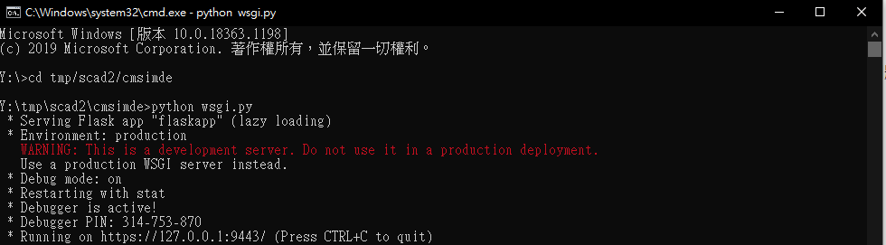

01-15 <<
Previous Next >> 問題
筆記
一、開啟9443

先打指令到cmsimde資料夾
在執行python wsgi.py指令
網址搜尋https://localhost:9443/
或複製黑窗最後一行的網址

案login登入→密碼admin
二、開啟8444
先到scad2資料夾找到http-server.py檔案

使用白窗開啟http-server.py
點選Tools→go

三、製作金鑰
點選資料夾的Portablegit→bin→sh.exe

輸入ssh-keygen -t rsa -b 4096 -C "40823245"
請自行改成自己的學號
案enter→輸入/y/tmp/id_rsa→案2次enter

下載putty、putty_home、GitExtensions(請自行更改路徑)
將start移到白窗 並新增
set GIT_HOME=%Disk%:\Portablegit\bin\
set GIT_SSH=%Disk%:\putty\plink.exe

打開.git資料夾，把config移到白窗
如沒有.git資料夾 打開隱藏的項目

新增[remote "origin"]裡的url = git@github.com:40823245/cad2020.git

file→save
打開putty資料夾的puttygen.exe
點load，找到id_rsa

案是→Save private key→案是→輸入學號(存.ppk檔)
打開putty.exe

若沒有github.com，在Host Name和Save Sessions打github.com案Save

設定proxy(使用自家網路、手機網路請選None)
看你的網路連到哪一台 就打一樣的proxy

打開SSH裡面的Auth
選擇你所生產的金鑰檔案(.ppk)
回到session點選save再open

在home新增.ssh資料夾
ProxyCommand y:/putty/plink.exe github.com %h %p
Host github.com
User git
Port 22
Hostname github.com
TCPKeepAlive yes
IdentitiesOnly yes
將上面的指令複製到白窗並另存config
到倉儲網頁新增金鑰(右上Settings)

點New SSH key
到tmp找到id_rsa.pub並用白窗開啟，複製內容到Key
並確認學號

案Add SSH key
四、進行上傳
方法一
先進到scad2 → cd tmp/scad2
git add .
git commit -m "此更新的主旨"
git push
輸入帳號(學號)
輸入密碼
方法二(啟用ssh)
要先改.git裡面的config
[remote "origin"]把之前的https加上#
開啟putty(putty.exe) 將設定調好
點github.com 案load
設定proxy(使用自家網路、手機網路請選None)
看你的網路連到哪一台 就打一樣的proxy
打開SSH裡面的Auth
選擇你所生產的金鑰檔案(.ppk)
回到session點選save再open
出現上圖就代表成功
一樣先進到scad2 → cd tmp/scad2
git add .
git commit -m "此更新的主旨"
git push
(此方法不需打帳號密碼)
方法三(啟用ssh)
使用資料夾的GitExtensions
點選GitExtensions.exe
修改設定


確認正確以後 點OK
選擇Create new repository

brown找到scad2資料夾後點Create
點tools→Git GUI

先點Stage Changed(=git add .)

案是

案Continue

左下的框會出現資料
然後右下的位置打上這次變更的主旨(=git commit -m "此更新的主旨")可輸入中文

點Commit→Push→Push

五、修改網頁標題
打開資料夾找到init.py

使用白窗打開

找到並修改成site_title = "學號 cad2020"
file→save就可完成
六、Zoomit
1、Ctrl+1:畫面放大+按下滑鼠進入畫畫模式(ESC能解除)
2、Ctrl+2:進入畫畫模式(ESC能解除)
3、Ctrl+3:出現倒數的時間，休息時間剩多久(ESC能解除、Ctrl+3重置倒數時間)
4、Ctrl+4:放大鏡(Ctrl+4能解除)
5、畫畫模式:滑鼠直接畫任意線段、TAB+滑鼠滑動=畫圓、Shift+滑鼠滑動=畫直線
Ctrl+滑鼠滑動=畫矩形、Shift+Ctrl+滑鼠滑動=畫指線、Ctrl+T=打字
01-15 <<
Previous Next >> 問題